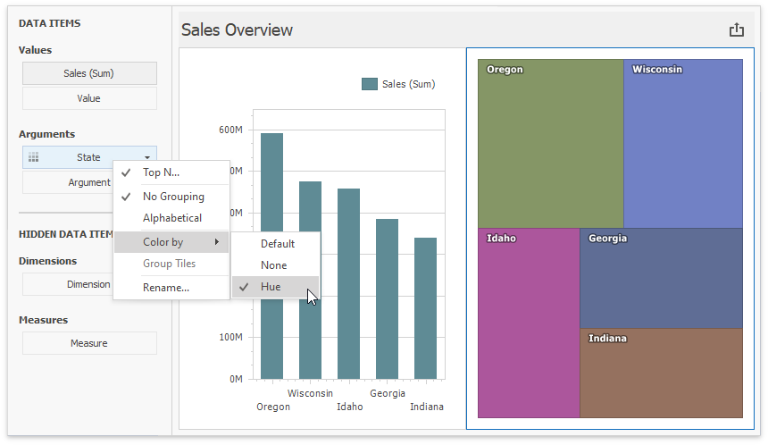
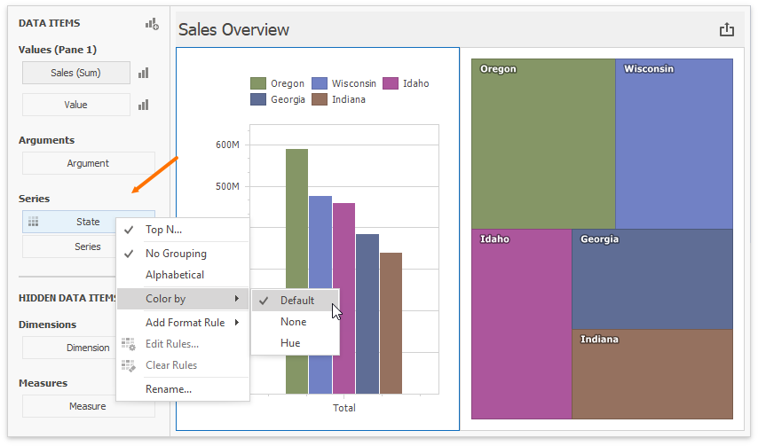
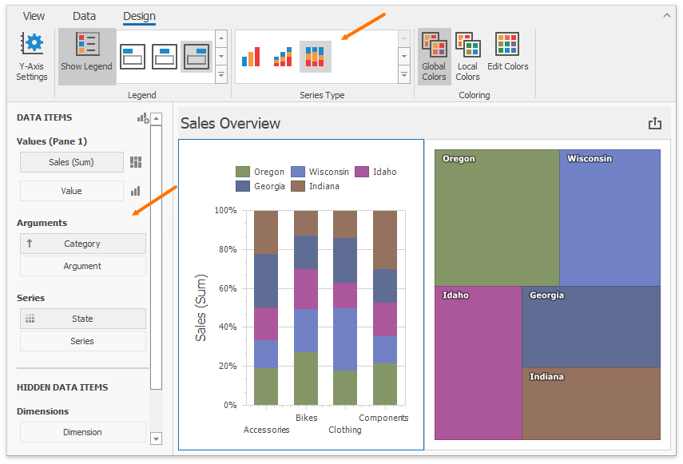
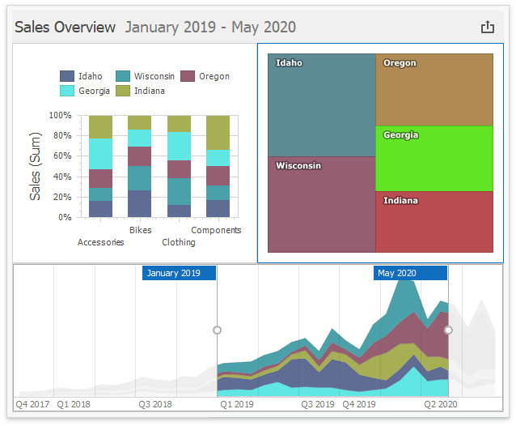

Coloring
The Dashboard Designer associates dimension values/measures and specified colors to paint dashboard item elements. This topic describes how to configure color settings in the WinForms Designer.
Coloring Basics
The following concepts are common to both Desktop and Web Dashboard controls:
- Color Modes
- Color Schemes
- Supported Dashboard Items
Refer to the following topic for more information about common concepts: Coloring Basics.
Color Mode: None
You can disable default color variation for dashboard item elements.
If you add a TreeMap to a dashboard, individual elements (titles) use different colors:

State values (Arguments) use different colors. To disable color variation, go to the Argument settings and select Color by | None.

Add a Chart with the same Argument and Value as in the TreeMap:

Note that Default means None for chart arguments.
Color Mode: Hue
You can enable colors in previously added Treemap and Chart items.
Set the TreeMap's color mode to Default or Hue:

In the Chart settings, move State from Arguments to Series. Default now means Hue in this new context. The coloring indicator ( ) on the data item shows that color variation by hue is enabled.
) on the data item shows that color variation by hue is enabled.

Add Category as a chart argument and switch to 100% Stacked View:

Use Global Color Scheme
The same State data items use identical colors. Dashboard constructs a Global Color Scheme for this purpose.
Add a Range Filter with the following settings:

Corresponding State fields are painted with the same colors, so you can associate and compare data from all dashboard items. This happens because all items use Global Colors (the default setting). You can see the switch to Global Colors in the Ribbon. Click Edit Colors to modify the colors used in the palette:

Note
The dashboard uses the default palette. This palette contains 20 unique colors to paint dimension values/measures. For more information on how to change default colors or create a new color table, refer to the following help topic: Customizing a Color Scheme.
This is how the Dashboard appears after you change the color for Georgia in the palette:

Use Local Color Scheme
If you want to use an independent set of colors in the selected dashboard item, switch to the Local Color Scheme.
You can see the Treemap's arguments that use colors from the Local Color Scheme:

Colors modified in the local color scheme do not affect items that use the global color scheme. The following image shows a custom color for Georgia in the Treemap:

Dashboard Item Color Mode Specifics
- Chart - Coloring
- Scatter Chart - Coloring
- Pie - Coloring
- Pie Map - Coloring
- Range Filter - Coloring
- Treemap - Coloring
How to Customize a Color Scheme
Refer to the following topic for more information on how to customize a color scheme: